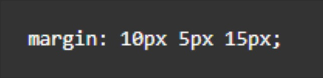

Basic HTML and CSS Quiz
1.
What does the acronym CSS stand for?
2.
How are id and class attributes selected in CSS?
3.
Which of the following is a valid CSS comment?
Choose One...
/*comment*/
<!--comment-->
#comment
4.
What is the bottom margin given this declaration?

Submit Quiz